GHOST · THE MARK · CONCEPT ROUND · NOVEMBER 2026
Make the mark the floating room, held still.
The operator: “the floating room version of Ghost is levels ahead … compared to the ‘logo’.” They are right, and the gap is not the drawing: it is light, pose and the instrument around it. Three directions, each a whole system, against today's in the same places. Nothing shipped changes in this round.

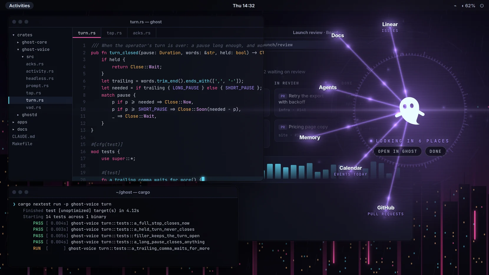
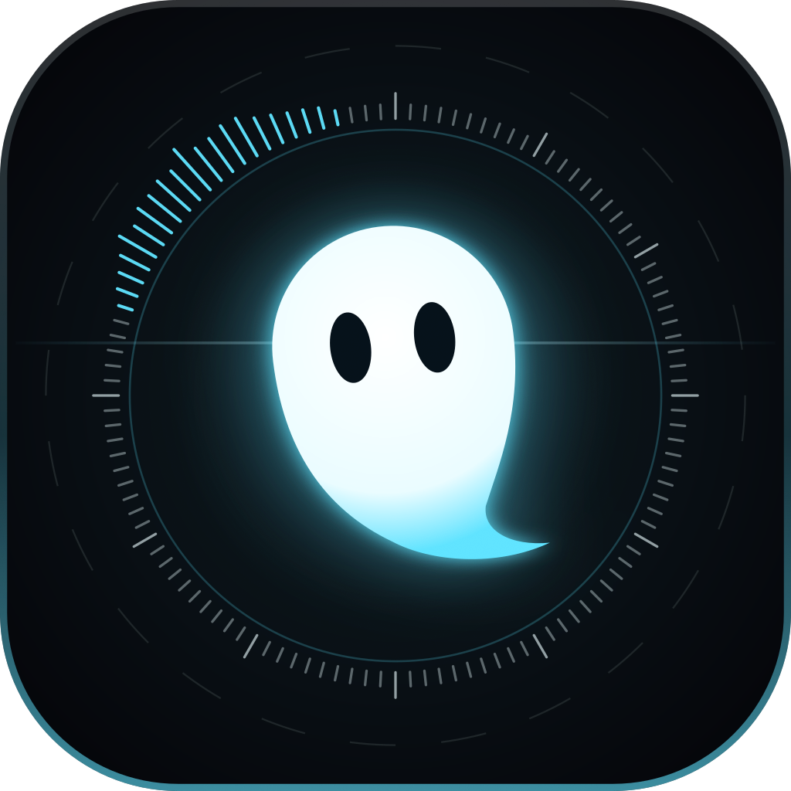
The character
The floating Wisp has presence for three reasons the icon throws away: it is lit, it is caught mid-drift (tilted, tail flicked, never standing to attention) and it looks at you. The smile and the stick arms are what make today's mark a sticker: they are gestures, and a gesture frozen in an icon is clip art. The redraw keeps Wisp's own curve from wisp.ts and changes only the pose.
sw), leaning −7° about (12, 13), eyes 6 % narrower, 24 % taller, 0.55 higher: looking up at you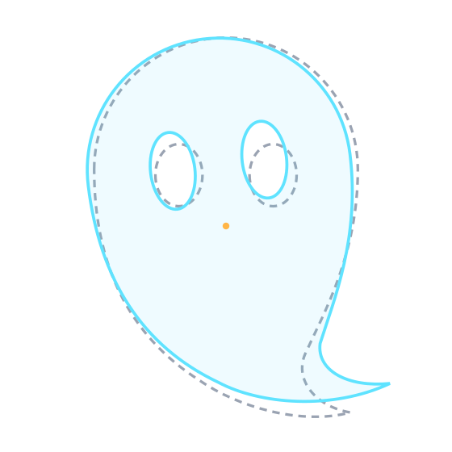
Arms: out of every still mark. The live mascot keeps them (its wave on hover is the best thing it does), so they become a reward for reaching for Ghost instead of a permanent pose. Sculpted into the silhouette they would be two bumps at 32 px and a character the agents' family doesn't share; I didn't draw that one past a sketch.
Mouth: out of the still mark. Wisp speaks with light and the ring in the room; a drawn smile at 16 px is two grey pixels.
Tilt: −7° and not more: past −10° the tail reads as a comma. The lean goes against the tail's curl, so the figure drifts up and left; at rest the ring's lit arc sits on that side, ahead of it.
The family still holds: the agents' shapes (from agentShapes.ts, unchanged) lit the same way sit beside it with no redraw needed. Their eyes are Wisp's two upright ovals; the redraw only made Wisp's taller, which the family can follow later or not at all.
I · Lit
Wisp is the light source. The indigo slab becomes a night tile; the state's colour is the light behind Wisp and the edge of the tile; a hairline streak runs through the eyes at 128 and up, the floating room's lens. No smile, no arms.
Holds: The simplest of the three, and the best at 16: a white figure on black is the strongest contrast a tile can have.
Costs: On its own it is a very good app icon and not yet a system: nothing in it says instrument, or reach. Bloom carries the look; under 48 there is no bloom and it is just a nice ghost on black.
7/10
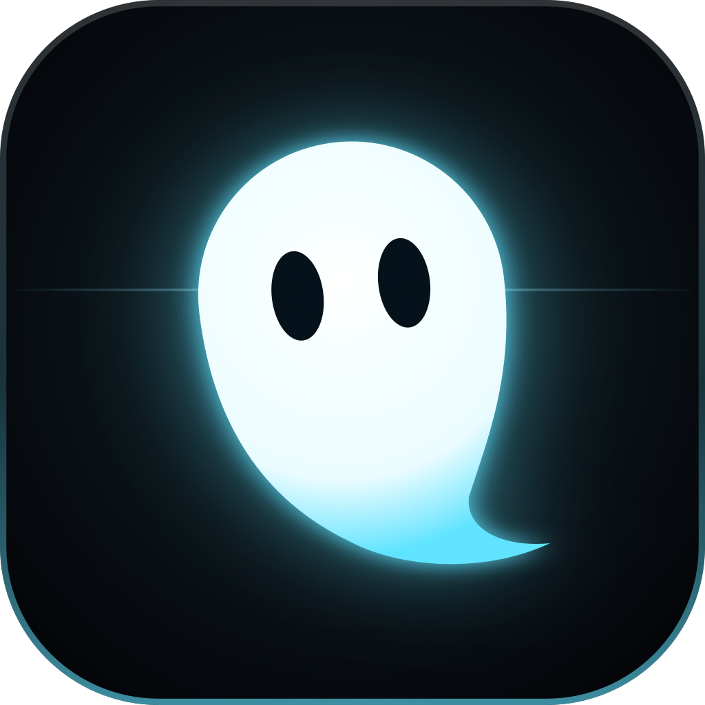
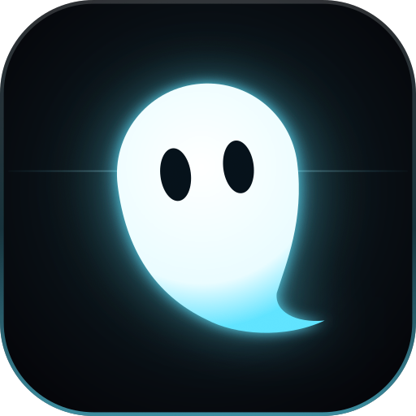


States the light and the rim carry the state; Not listening keeps the tray's red stroke (ADR 0057)


One colour tray, themed icons, print


II · Instrument recommended
Lit Wisp inside the floating room's ring of ticks: the ring is the device, an arc of it lit in the state's colour is what Ghost is doing (where it is listening, where it reaches, all of it while it speaks, the bottom for a yes). Under 32 the ring can't be drawn honestly, so the mark becomes I's small drawing: one system, two levels of detail.
Holds: It is the floating room, made still. It reads as an instrument, not a sticker, and it carries state without a second icon. The ring fits Android's circle mask exactly.
Costs: At 32 the ring is a hairline and an arc, close to its limit. It needs the night tile to read; on a light page it is a dark chip, never a bare glyph.
8.5/10
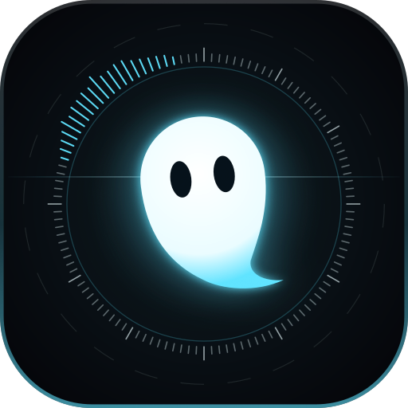


States the arc says what; the light says how


One colour tray, themed icons, print; the ring from 48, the lit arc as longer ticks


III · Eyes in the dark
The body is the night, found only by a rim of light from above; the eyes are the light. The most cinematic, the most Blade Runner.
Holds: Unmistakable at 16: two lit pairs of pixels in a black square. The monochrome is a clean outline.
Costs: It stops being Wisp: it watches you instead of being glad to see you, and next to the agents' family (all solid figures) it is the odd one out. The rim vanishes on a busy wallpaper. Good for a poster, wrong for the thing you talk to all day.
6.5/10
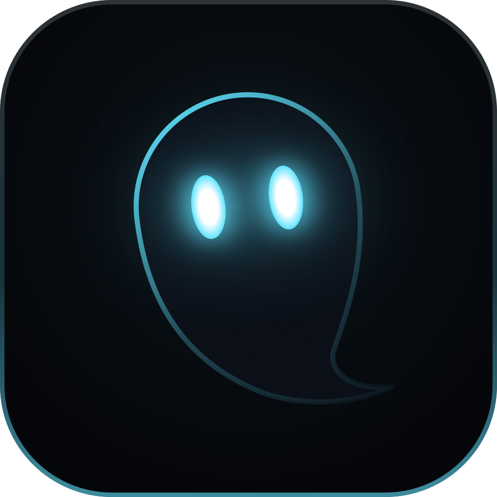
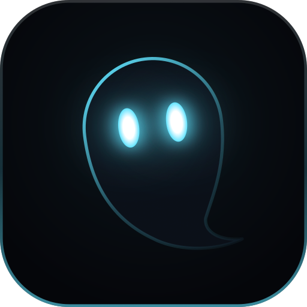


States the light and the rim carry the state; Not listening keeps the tray's red stroke (ADR 0057)


One colour tray, themed icons, print


In context every mark at the size the surface really uses; drawn here, nobody's desktop
GNOME dock
48 px on a busy wallpaper and a light one
Top bar tray
16 px, dark and light panel
at rest, one colour · in a session, lit in the state's colour (green: listening; on a light panel, the chip)
at rest, one colour · in a session, lit in the state's colour (green: listening; on a light panel, the chip)
at rest, one colour · in a session, lit in the state's colour (green: listening; on a light panel, the chip)
The desktop app's rail
the brand glyph at 36, listening and not listening (ADR 0057), dark and light theme
Browser tab
the favicon at 16 among other tabs
Android home screen
the adaptive icon through four launcher masks; the themed (Material You) icon below

 circlesquircleroundedteardrop
circlesquircleroundedteardrop

 circlesquircleroundedteardrop
circlesquircleroundedteardrop

 circlesquircleroundedteardrop
circlesquircleroundedteardrop

 circlesquircleroundedteardrop
circlesquircleroundedteardrop
Android notification
the status bar's one-colour icon, and the card's
Close issue #214 in heka-vault/site?
Close issue #214 in heka-vault/site?
Close issue #214 in heka-vault/site?
Close issue #214 in heka-vault/site?
GitHub organisation
the avatar at 80 and at 20 in a list

A voice on your own machine
A voice on your own machine
A voice on your own machine
A voice on your own machine
README header
GitHub light and dark
Ghost floats over your work when you call it.
Ghost floats over your work when you call it.
Ghost floats over your work when you call it.
Ghost floats over your work when you call it.
Ghost floats over your work when you call it.
Ghost floats over your work when you call it.
Ghost floats over your work when you call it.
Ghost floats over your work when you call it.
The site's nav
heyghost.app
Big surfaces: the reach Direction C belongs here, where there is room for the beams
Beams to named places are the one thing only Ghost does, and they are the floating room's centrepiece. At 16 to 128 px they are noise; on a social card, a splash, the site's hero and a lockup they are the story. So the reach is not a mark: it is what the mark does on a big surface.
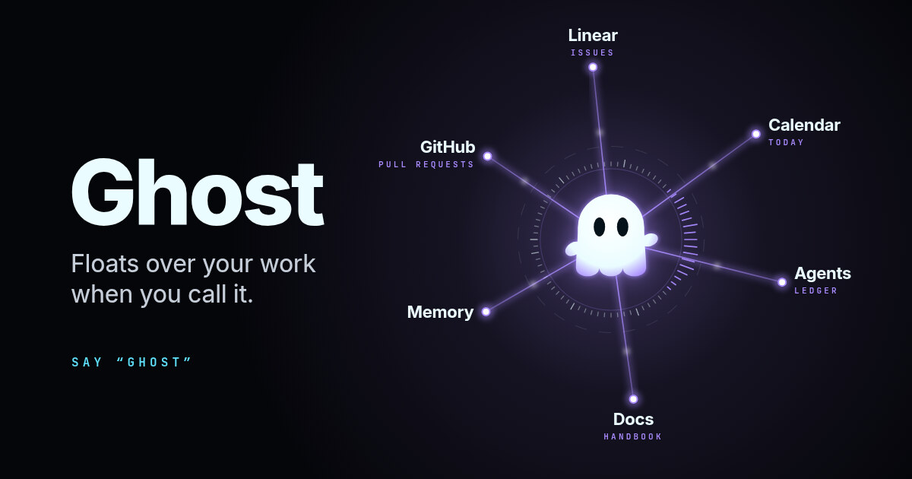
GhostSAY “GHOST”
GhostSAY “GHOST”Wordmark and lockup
Inter 800 at −0.035 em, titlecase, the weight the floating room already uses for every name it shows. Nothing drawn: the mark does the drawing, the word is plain and heavy. The room's second voice, JetBrains Mono 600 at +0.32 em in capitals, is the tagline and the state, never the name. Wide-tracked capitals for the name (GHOST, the Akira title) was the tempting one: it turns the product into a film poster and fights the mark for attention.
GhostGhostGhostSAY “GHOST”GhostGHOSTnot this: a poster, not a productMotion for the places that can animate: the rail's chip, the splash, the site's hero, the README
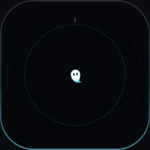
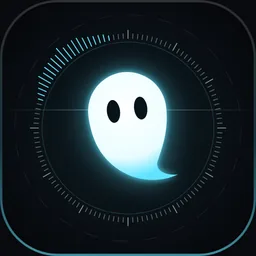
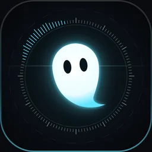
Recommendation: II, the instrument
The brief's lean was right, with one correction: A and B are one mark, not two, and D is how it scales, not a fourth idea. Lit Wisp inside the ring from 48 px up; under 32 the ring goes and Lit's small drawing is the mark. Light is the brand: the night tile is never optional, so on a light page the mark is a dark chip, not a bare glyph. The reach (C) is what the mark does on a big surface.
| Out of 10, against the floating room | |
|---|---|
| The floating room itself | 9: lit, alive, specific; the bar everything is measured against |
| Today's mark | 4: friendly, clean, and any app's sticker; mush at 16; the indigo slab is the one colour the room never uses |
| I · Lit | 7: the best 16 px of the three; not a system on its own |
| II · Instrument | 8.5 at 48 and up, 7.5 at 16 to 32 (where it is I): the room, made still |
| III · Eyes in the dark | 6.5: the most striking poster, the least Wisp |
Must stay flat or one-colour
- The tray at rest: GNOME's panel is one-colour; a lit tile there looks like an ad. Lit only during a session, in the state's colour.
- Android's themed icon and the notification's small icon: the system paints them; the one-colour drawing is the only one that survives.
- Forced colours and print: one colour, eyes cut out.
- The agents' glyphs (
LineGlyph) stay flat in their hue on their soft tile: the lit treatment belongs to Ghost, not to every agent in a list.
What I would not do
- Animate the dock icon or the favicon on a timer. A living icon is the tray and the rail, which already know the state; a favicon that pulses on a site is noise.
- Put the beams in anything smaller than a splash.
- Keep the indigo. Iris stays the app's accent for actions; it is not the mark's light. The mark's light is the state's colour, cyan at rest.
- Make the ring turn in the dock. It turns in the room (0.05 rad/s); a still mark is still.
- Redraw the agents' family now. They sit beside the new Wisp as they are; taller eyes for them is a later, separate call.
What it costs to roll out
| Desktop window and dock | apps/desktop/src-tauri/icons/{32x32,128x128,128x128@2x,icon}.png | II at each size (32 is the hairline-and-arc drawing) |
| The .deb's desktop entry | apps/desktop/src-tauri/ghost.desktop (Icon={{icon}}, from the bundle's icons) | follows the Tauri icons; add 48 and 256 so GNOME doesn't scale 128 |
| Tray | apps/desktop/src-tauri/src/tray.rs (default window icon; struck() greys it) | one-colour Wisp at rest, lit by state in a session; struck() keeps working on the one-colour drawing |
| The rail's brand glyph | apps/desktop/src/app/Rail.tsx, src/ui/Brand.tsx (GhostMark, GhostGlyph) | the night chip at 36 in both themes, its arc by phase; the live mascot on hover inside the chip |
| Favicons | apps/desktop/public/favicon.{svg,ico}; site/src/pages/favicon.svg.ts | I's 16/32 drawing (the site's favicon is already cyan on black, halfway there) |
| Phone launcher and adaptive layers | apps/mobile/assets/{icon,android-icon-foreground,android-icon-background,android-icon-monochrome}.png; app.json backgroundColor #5560E8 | II foreground inside the 66 dp circle, night background, one-colour ring for themed icons; backgroundColor to #05060A |
| Phone splash and favicon | apps/mobile/assets/{splash-icon,favicon}.png | the splash lockup above; favicon as the desktop's |
| Phone's notification small icon | (not set in app.json today) | the one-colour 24 dp drawing; the lit one in the card |
| Site | site/src/components/Wordmark.astro, site/public/{apple-touch-icon.png,og.jpg}, Base.astro | the lockup in the nav; apple-touch-icon is II at 180; og.jpg is the reach card |
| README and GitHub | README.md header; the org's avatar (uploaded by hand) | the lockup image on top of the README; II at 512 as the avatar |
| In-app references | packages/ui/src/{brand,wisp}.ts, docs/design-system.md (Iconography, Page layout) | a still-pose export next to wispGlyph(); the doc's brand paragraph rewritten |
One generator (this folder's src/marks.mjs, moved next to wisp.ts and reading its body()) writes every file above, so the still mark and the live mascot can't drift. About two days: the generator into packages/ui, the Tauri and phone exports, the rail's chip, the tray's two drawings, the site and the doc. The mascot's live drawing changes only in its rest pose.